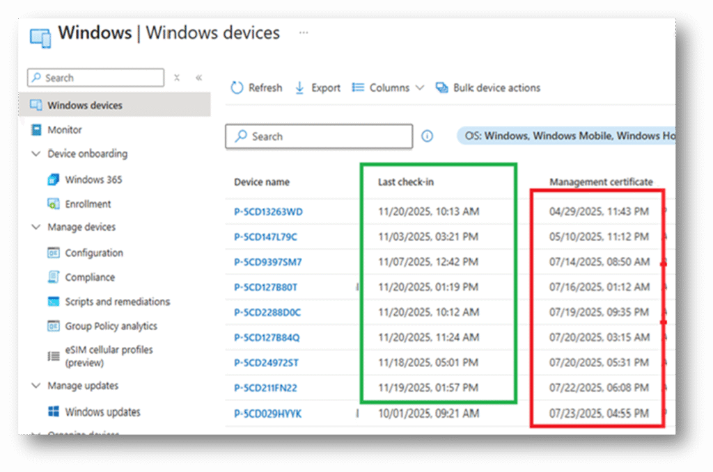
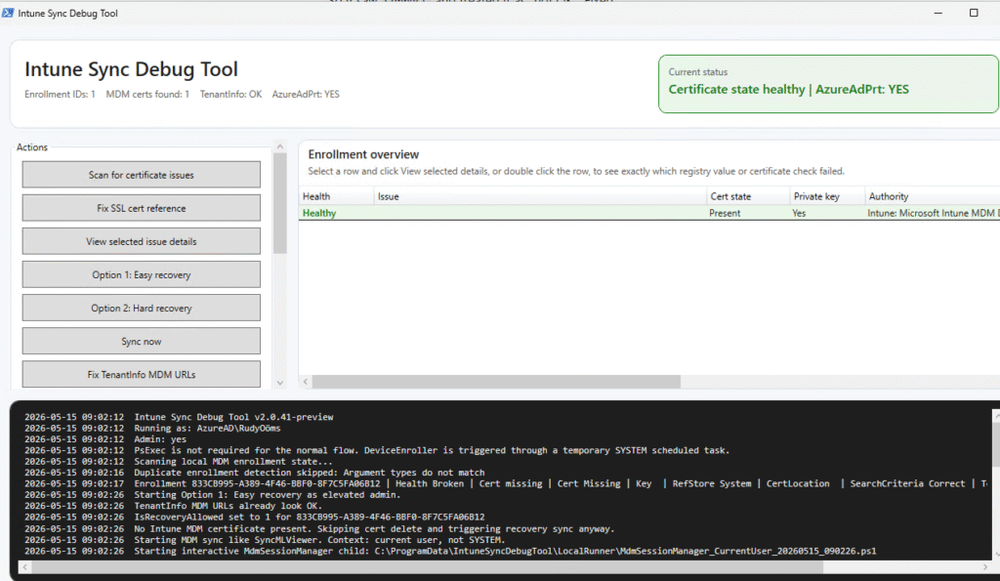
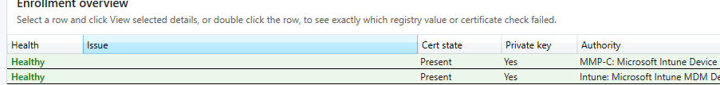

This blog will show you all the information you need to know about the new Intune Sync Debug Tool. Which can be downloaded here:
call4cloud-code/Intune-Sync-Debug-Tool-V2: Intune Sync Debug Tool V2
Introduction
Some Intune sync issues look bigger than they really are. The device stops checking in. Policies are no longer coming down. The Intune portal keeps showing an old check-in time. You start looking at IME, sync buttons, scheduled tasks, and enrollment state, and before you know it, you are knee-deep in logs again.

But a lot of these issues still come back to the same boring but important thing.
The Intune MDM device certificate. If that certificate is missing, expired, in the wrong place, missing its private key, or if Windows has the wrong registry reference for it, the MDM stack can no longer authenticate properly. After that, sync starts failing and the device slowly turns into one of those “why is this still broken?” cases.
That is why I built the Intune Sync Debug Tool.
The first version was mostly a PowerShell repair tool that checked the Intune MDM certificate, looked at the MDM URLs, and used PsExec to run DeviceEnroller.exe as SYSTEM.
This updated version is a lot cleaner. It focuses on the actual certificate state, the SslClientCertReference wiring, the SslClientCertSearchCriteria, the MDM recovery flow, stale EnterpriseMgmt scheduled task folders, and the difference between the classic Intune MDM cert and the MMP C certificate.
No more guessing. No more fixing the wrong thing first.
Installing and running the tool
The tool is still a PowerShell tool, but this version now opens a small WPF interface. That makes it easier to see what is broken and what the tool is going to fix. When the tool opens, it scans the local MDM enrollment state and shows the important parts directly in the overview.

It checks the local enrollment registry, the OMADM account registry, the MDM certificate stores, the TenantInfo URLs, the Primary Refresh Token state, and the EnterpriseMgmt scheduled task folders. The first button is simple: Scan for certificate issues
On a healthy device, you should see the enrollment row turn green. The status card should show that the certificate state is healthy and that AzureAdPrt is available.
Yes, the world moved to Entra. The dsregcmd /status output still calls it AzureAdPrt, so that is what the tool checks. AzureAdPrt : YES. That check matters. There is no point in blaming the MDM certificate if the device identity state is already broken.
What the tool checks
The tool focuses on the MDM certificate state and the registry values that ensure OMADMClient uses the correct certificate.
The most important checks are the certificate itself, the private key, the certificate location, the DMPCertThumbPrint, the SslClientCertReference, and the SslClientCertSearchCriteria.
A healthy Intune enrollment should have a usable certificate with a private key and registry values that point to that certificate. The important values are stored here.
HKLM:\SOFTWARE\Microsoft\Enrollments\<EnrollmentId>
HKLM:\SOFTWARE\Microsoft\Provisioning\OMADM\Accounts\<EnrollmentId>
HKLM:\SOFTWARE\Microsoft\Provisioning\OMADM\Accounts\<EnrollmentId>\ProtectedThe values that matter are these.
DMPCertThumbPrint
SslClientCertReference
SslClientCertSearchCriteriaThe expected SslClientCertReference should look like this: MY;System;<thumbprint>
The expected SslClientCertSearchCriteria should look like this: Subject=CN%3d<EntDMID>&Stores=MY%5CSystem
When those values are missing or pointing to the wrong thumbprint, the certificate can be perfectly fine, but OMADMClient still cannot use it. That is one of those issues that looks like a sync problem but is actually a certificate reference problem.
Intune and MMP C certificates
One thing I wanted to make more obvious in this version is the certificate authority behind the certificate.
The tool now labels the certificates like this.
Intune: Microsoft Intune MDM Device CA
MMP C: Microsoft Intune Device Management Device CA
That distinction matters. If you only look for the classic Microsoft Intune MDM Device CA certificate, you can miss the MMP C side. If both exist, the overview shows which authority belongs to which enrollment row.
This also helps when cleaning up or recovering the state. You do not want the tool to silently remove one certificate and leave the other one behind without telling you what happened.
The private key check
A certificate without a private key is useless for this flow. That is why the tool does not call a row healthy just because the certificate exists. The certificate must exist, it must not be expired, and it must have a private key.
If the certificate was exported without the private key and imported back into another store, the tool should mark that as broken. That is the correct behavior. A certificate object without the matching private key cannot be used for the MDM client authentication flow.
The old tool had a private key repair option using certutil -repairstore. I removed that from the interface. In theory, it can help in some certificate binding scenarios, but for this specific Intune MDM certificate flow, I do not want the tool to pretend that it can always glue things back together. If the certificate is missing its private key, recovery is the cleaner route.
Certificate location
The tool also checks where the certificate actually lives. That became important while testing because it is pretty easy to create a weird state. You can have the registry saying MY;System, while the certificate is sitting in the current user store. You can also have a cert in a user hive that looks correct at first glance, but does not have the private key available in the context where OMADMClient needs it.
The tool checks the common locations.
LocalMachine\My
CurrentUser\My
SYSTEM CurrentUser\My
.DEFAULT CurrentUser\My
Loaded user CurrentUser\My storesFor a normal healthy Intune MDM enrollment, the important part is still simple.
SslClientCertReference = MY;System;<thumbprint>
Certificate location = LocalMachine\My
Private key = YesIf the certificate is somewhere else, the tool shows that in the details view.
Fix SSL cert reference
The Fix SSL cert reference button is for one specific type of issue.
The certificate exists. The private key is there. The certificate is in the correct location. But the registry values that point OMADMClient to that certificate are missing or wrong. In that case, the tool can repair these values.
DMPCertThumbPrint
SslClientCertReference
SslClientCertSearchCriteriaIt does not blindly write those values. It first needs to find a valid certificate and the right EntDMID. If the certificate is missing, expired, in the wrong store, or missing the private key, the tool will not treat that as a simple SSL reference issue. That is when you use recovery instead.
This was important to fix because earlier versions of the tool could show a confusing message. If the certificate was gone, it could still complain about a thumbprint mismatch. That was technically true, but not useful. The real issue in that case is not the mismatch. The real issue is that the certificate is missing.
The updated tool checks that first.
Option 1: Easy recovery
The first recovery option is called Option 1: Easy recovery.
This is the option to use when the local MDM enrollment state is still mostly intact, but the MDM certificate needs to come back. The tool checks whether recovery is allowed. If needed, it sets the recovery flag. If the MDM certificate is still present, it removes it. Then it triggers an MDM sync and waits for Windows to recover the certificate.
The event you want to see is this one.: Event 272
Device token MDM recovery successful
That event shows up in the DeviceManagement Enterprise Diagnostics Provider logs and tells us that the recovery path worked. The tool also watches the MDM sync events. One useful event is event 209 in the Sync log: MDM Session: OMA DM session ended with status: The operation completed successfully.
That is a nice signal, but it is not the final health check. The final verdict still comes from the actual certificate state. Is the certificate present? Is the private key there? Is the certificate in the right location? Do the SSL reference values point to the right thumbprint?
That is what decides green or red.
Option 2: Hard recovery
The second recovery option is called Option 2: Hard recovery.
This one skips Easy recovery completely. It is for cases where the local MDM enrollment state is too broken and you want to clean it up and trigger a fresh MDM reenrollment. The old tool used PsExec to run DeviceEnroller.exe as SYSTEM. That worked, but it could also be blocked by ASR rules or AV. It could also create noise in your SIEM. That is not ideal for a troubleshooting tool.
The updated tool uses a temporary SYSTEM scheduled task instead. The task runs this command: DeviceEnroller.exe /C /AutoEnrollMDM
That gives us the SYSTEM context without needing PsExec for the normal flow. Before running DeviceEnroller, the tool also checks and repairs the TenantInfo MDM URLs.
MdmEnrollmentUrl = https://enrollment.manage.microsoft.com/enrollmentserver/discovery.svc
MdmTermsOfUseUrl = https://portal.manage.microsoft.com/TermsofUse.aspx
MdmComplianceUrl = https://portal.manage.microsoft.com/?portalAction=ComplianceThat part matters. If those URLs are missing, Windows may not know where to go when you trigger enrollment. Hard recovery removes stale MDM enrollment artifacts, removes the related MDM certificates, cleans up the old EnterpriseMgmt scheduled task folders, and then triggers reenrollment. That is why the tool shows a clear warning before it runs.
What changed compared to the old tool
The old Intune Sync Debug Tool was mostly a console based repair script. It checked the Intune MDM Device CA certificate, looked at the expiration date, checked for private key issues, checked the wrong store scenario, fixed MDM URLs, checked dmwappushservice, and used PsExec with an encoded command to trigger the repair flow. That worked, but it was also a bit rough.
The updated version is more targeted. It has a WPF interface. It labels Intune and MMP C certificates. It checks the private key state. It checks the actual certificate location. It verifies SslClientCertReference and SslClientCertSearchCriteria. It can repair those values when safe. It uses Easy recovery for certificate recovery. It uses a temporary SYSTEM scheduled task for hard recovery. It detects stale EnterpriseMgmt folders. It checks AzureAdPrt. It no longer depends on PsExec for the normal flow.
And just as important, it tries not to fix the wrong thing.
Conclusion
Having Intune sync issues on a device is annoying. But not every sync issue is really a sync issue.
Sometimes the MDM certificate is missing. Sometimes the private key is gone. Sometimes the SSL reference values are wrong. Sometimes the certificate is healthy, and the only leftover mess is an old EnterpriseMgmt scheduled task folder.
That is why the updated Intune Sync Debug Tool tries to separate those states before touching anything.If the certificate is present and usable, fix the SSL reference wiring.
If the certificate is missing but the enrollment is still intact, use Easy Recovery. If the local enrollment state is broken, use Hard recovery.If only an old scheduled task folder is left behind, remove that stale folder and move on. No magic. No guessing. Just checking the right local state and fixing the part that is actually broken.